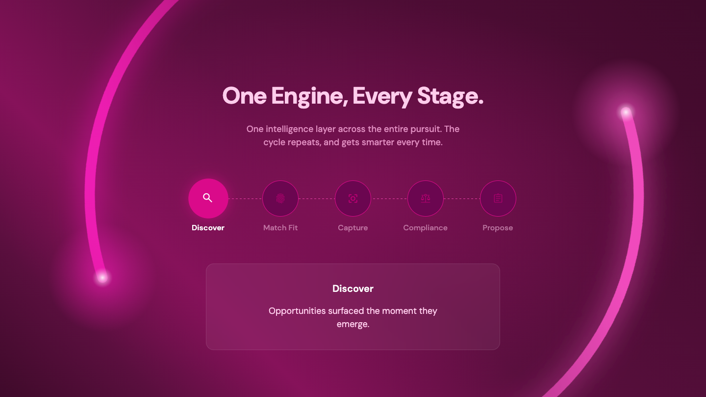
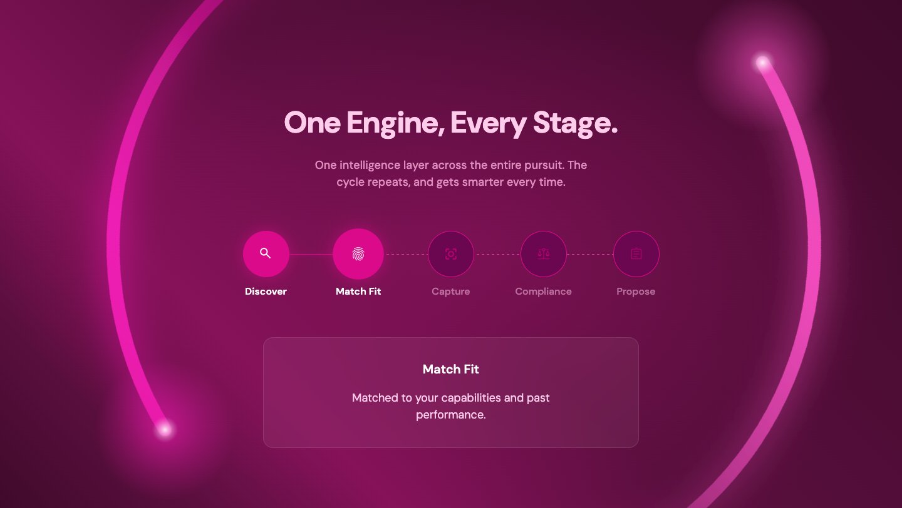
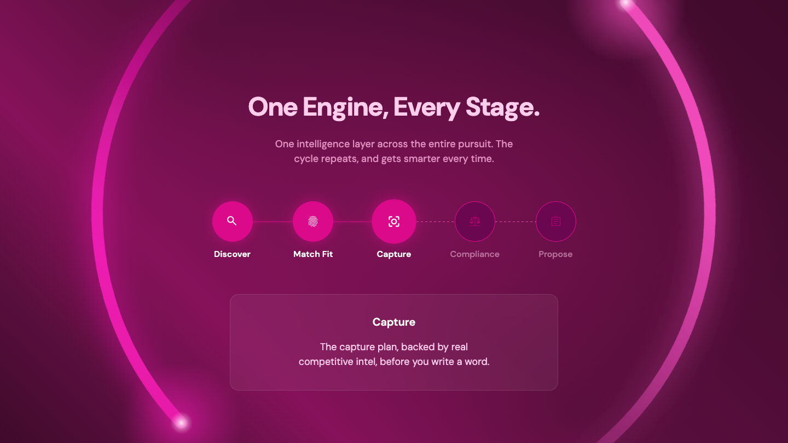
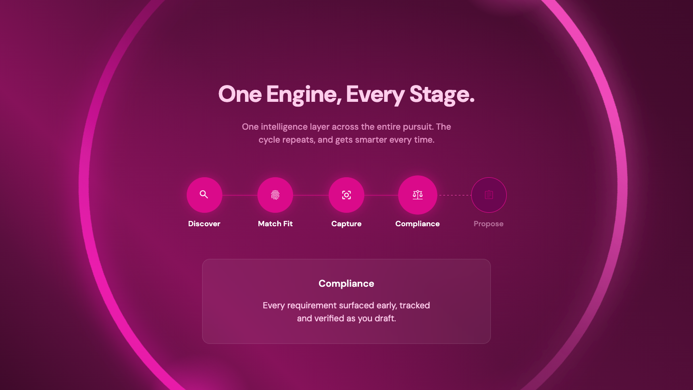
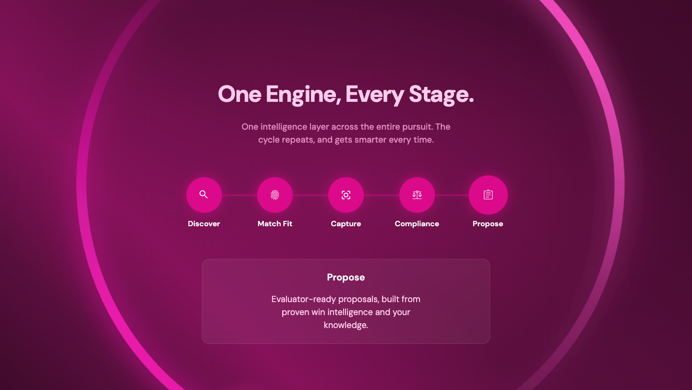

State 1 Discover
The initial state highlighting the discovery phase of the lifecycle.

State 2 Match Fit
The second state demonstrating opportunity matching and fit assessment.

State 3 Capture
The third state focused on capture management and pursuit strategy.

State 4 Compliance
The fourth state emphasizing proposal compliance and review.

State 5 Propose
The final state representing the generated proposal submission.

Technical & UX Considerations: Animations
1. Circling Ring / Light Trails
The infinite looping trails behind the PetalOS module are built using SVG and pure CSS animations to guarantee smooth 60fps performance without taxing the JavaScript main thread.
- Implementation: The trails utilize
stroke-dasharrayandstroke-dashoffsetto create the illusion of a line being drawn. A CSS@keyframesanimation pushes the offset infinitely. - Performance: By isolating the rotation to a wrapper `div` and using CSS transforms (
transform: rotate()), we force hardware acceleration. - Visuals: The dual interlocking trails are achieved by placing two SVG instances on top of one another and offsetting the animation delay (
.delaymodifier) and rotation scale.
2. The Bubble (Node) Auto-Sequence
To immediately demonstrate value when the PetalOS section scrolls into view, we implemented an autonomous timeline progression.
- Scroll Triggering: An
IntersectionObservermonitors the `.petalos-nodes` container. It's configured with dual thresholds:[0, 0.8]. - Activation: The animation only begins when the user has scrolled the component prominently into view (80% intersection). This prevents the animation from finishing off-screen.
- Deactivation & Reset: If the user scrolls past the section before it finishes (0% intersection), the interval is cleared and the state resets to 0. This ensures the component is always ready to re-demonstrate its value if the user scrolls back.
- Collapsed Definitions: During this automated cycle, the detailed definitions drop-down remains collapsed to prevent disruptive layout shifts while the user is actively reading or scrolling.
3. Yielding to User Interaction
The most critical UX decision is yielding control to the user. The automated sequence is strictly a passive demonstration.
- Manual Override: A global
userInteractedWithPetalosflag tracks explicit intent. The moment a user clicks a specific bubble or timeline button, this flag is set to true. - Graceful Exit: The auto-play interval is immediately destroyed. The UI expands to show the detailed text for the selected stage, transitioning the component from a "demonstration" mode into an "interactive exploration" mode.
- Observer Ignorance: Once the user has interacted, the IntersectionObserver safely ignores all future scroll events. This guarantees the user doesn't lose their place or get frustrated by the UI randomly resetting if they briefly scroll away to reference other content.